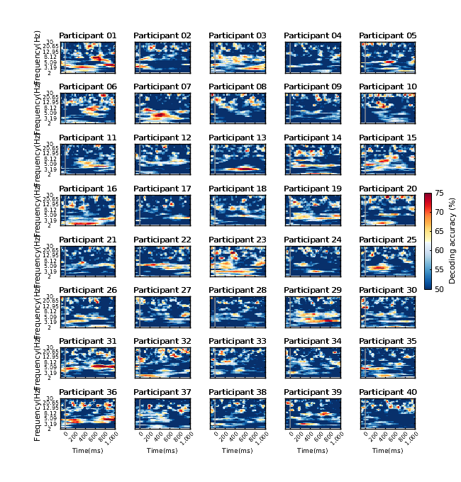

Plot single participant's time- and frequency- decoding analysis result
This script plots the results of time- and frequency-resolved multivariate analysis of infants in the study "Visual category representation in the infant brain"
Contents
Initialize
% Clean command window, workspace and figure windows clc; clear; close all;
Download dataset (if necessary) and add VCR_infant to the MATLAB path
setup(10);
Load result
% User input for result type datasetstr = 'timefrequency'; load(['resultdata_',datasetstr,'.mat']);
Plot result
f=figure(1); for parn=1:40 subplot(8,5,parn) resdata_ = squeeze(resdata(parn,:,:)); [H_image]=imagesc(timepoints, frequencies, resdata_); % stimuli onset line([0,0], [frequencies(1)-1, frequencies(end)+1],'Color',... [0.6,0.6,0.6], 'Linewidth', 1, 'Linestyle', '-'); % Set x-axis and y-axis parameters axis xy; set(gca,'FontName', 'Arial',... 'Fontweight','Normal',... 'Fontsize', 6,... 'Linewidth',1,... 'TickDir','in', 'Xcolor', 'Black', 'Ycolor', 'Black'); xlim([-100, 1000]); xtickangle(45); set(gca,'XTick',timepoints(1):200:timepoints(end), ... 'XTickLabel', addcommaarr(timepoints(1):200:timepoints(end))); ylim([1,30]); set(gca,'YTick',[1,6,11,16,21,26,30], ... 'YTickLabel', round(frequencies([1,6,11,16,21,26,30]),2)); % color map colormap(plotcolors); caxis([50,75]); if ismember(parn,36:40) xlabel('Time(ms)','Fontsize', 7, 'Fontname', 'Arial') else set(gca,'XTickLabel',[]); end if mod(parn,5)==1 ylabel('Frequency(Hz)','Fontsize', 8, 'Fontname', 'Arial'); else set(gca,'YTickLabel',[]); end title(sprintf('Participant %02d', parn),'FontSize', 8); end % Set color bar cbpos = [0.92 0.4 0.015 0.2]; CBar_Handle = colorbar('position',cbpos); set(CBar_Handle,'FontSize', 8,'Linewidth', 0.5, 'FontName', 'Arial','Color', 'black'); set(get(CBar_Handle, 'YLabel'), 'String', "Decoding accuracy (%)", ... 'FontSize', 8, 'FontName', 'Arial','Color', 'black'); % Set figure position and size width=650; height=680; set(gcf,'Position',[1,1,width,height],... 'Color', 'White','Renderer','Painters'); movegui(f, 'center');